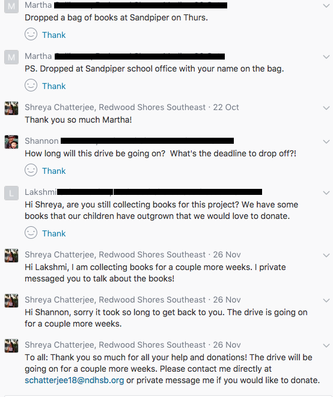
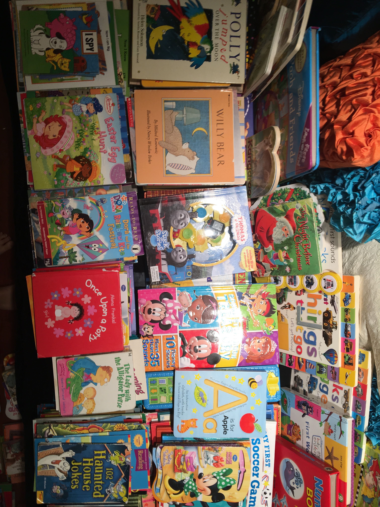
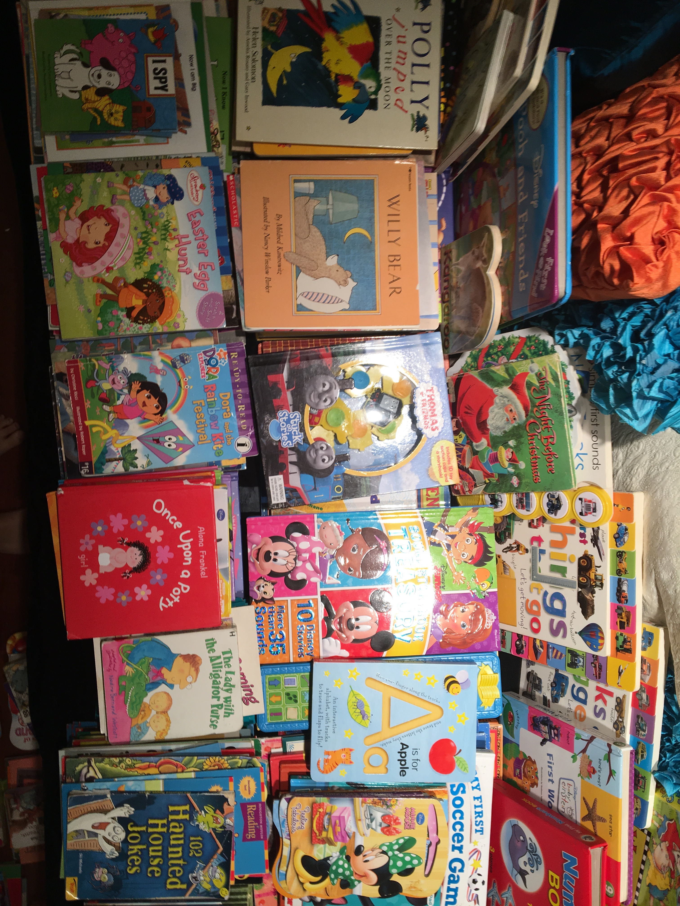

First, I contacted Project Read to be sure they would let me donate.
I was estatic that Project Read was willing to take books from the drive! This is a part of their email response after I asked if they would be willing to accept books. Next, I negotiated with my school for a number of bins to borrow and a length of time to keep them. I then contacted my local libraries to place my bins, but they were unfortunately not able to work with me.
This is a sentence from an email I was sent from my local library. Fortunately, my local community centers were willing to help. I contacted multiple managers, and below is a response from one.
–––––––––––––––––––––––––––––––––––––––––––––––––––––––––––––––––––––––––––––––––––––––––––––––––––––––––––––––––––––––––––––––-––––––––––––––––––––––––––––––––––––––––––
I first created flyers to get the word out and put them around my community.
Next, I posted my flyer and a brief explanation of my drive on NextDoor, a website that connects me to community members. I was overjoyed that I amassed many responses. Below are a few.
I also contacted local radio shows and found one where a host wanted to donate to my drive and was a neighbor! She invited me on her show to talk about my drive. Below is a picture and video.
I also created an email for my drive, and asked people who wanted to donate to contact me while on the radio.
Before I had a chnace to tell Project Read that I had the amazing opportunity of being on the radio, they told me they had gotten book donations because someone had heard me on air! They also featured me on their website. At that time, I had raised about 400 books.
–––––––––––––––––––––––––––––––––––––––––––––––––––––––––––––––––––––––––––––––––––––––––––––––––––––––––––––––––––––––––––––––-––––––––––––––––––––––––––––––––––––––––––
As I started getting books, I organized them in a room. Here are pictures of my assortment.

 


–––––––––––––––––––––––––––––––––––––––––––––––––––––––––––––––––––––––––––––––––––––––––––––––––––––––––––––––––––––––––––––––-––––––––––––––––––––––––––––––––––––––––––
After collecting over 1,000 books, it was time to donate them. I was initially scared they wouldn't all fit in the car!
After all the books were gathered, I started putting them into paper bags to load in the car. Then I realized there were too many for the bags, and had to transport them manually.
–––––––––––––––––––––––––––––––––––––––––––––––––––––––––––––––––––––––––––––––––––––––––––––––––––––––––––––––––––––––––––––––-––––––––––––––––––––––––––––––––––––––––––
I hope you enjoyed my drive from start to finish, through pictures. Though I unfortunately do not have pictures of every step of the process, I tried to provide a general overview of the drive. I am absolutely estatic to have independently collected over 1,000 books for the children of Project Read, and hope this fosters or futhers their love of reading.